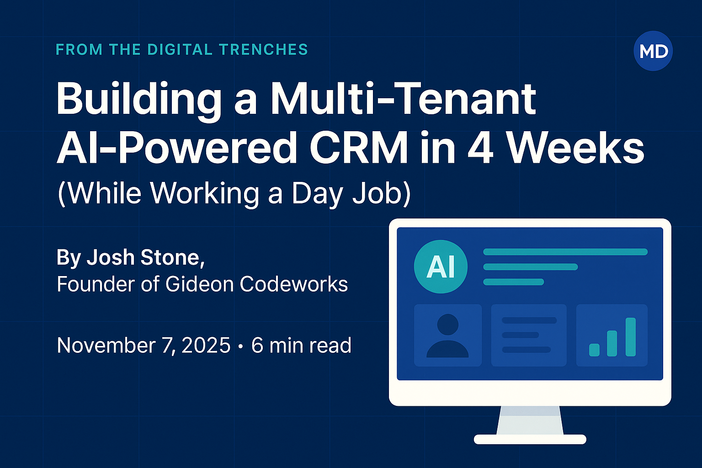
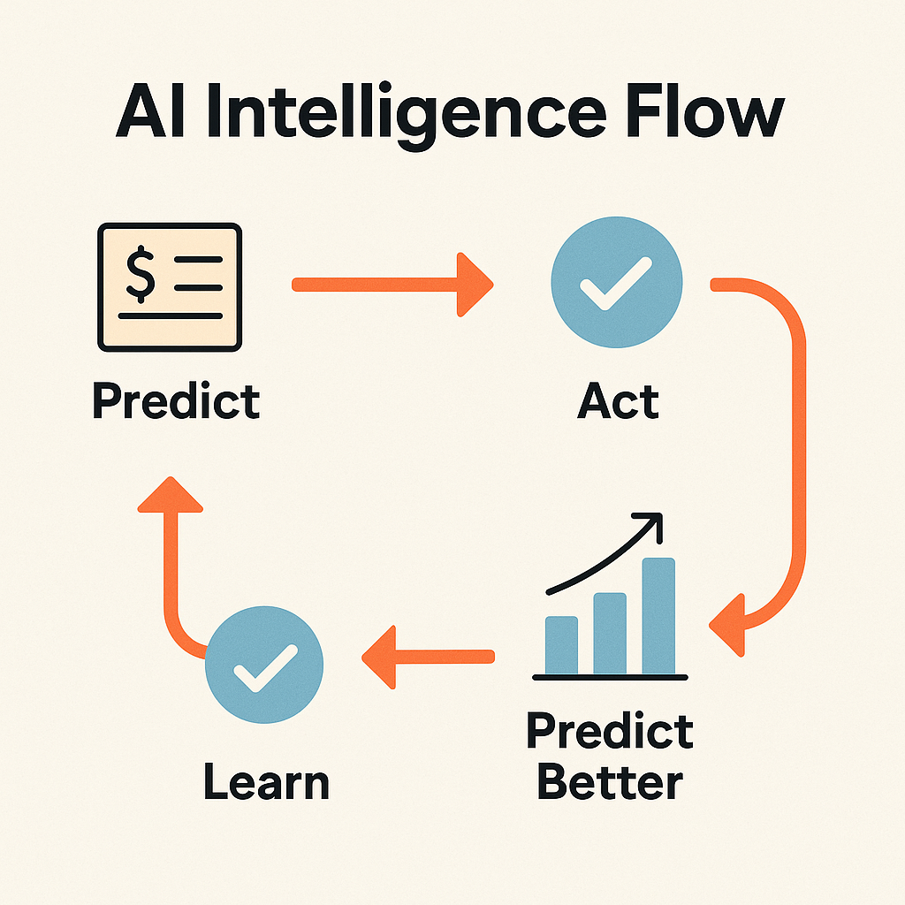
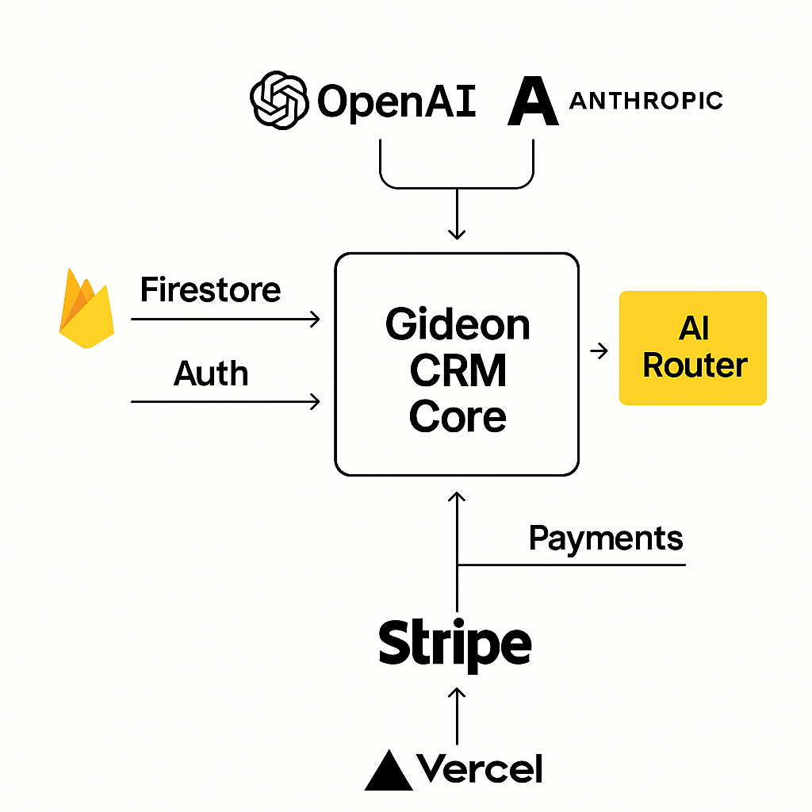
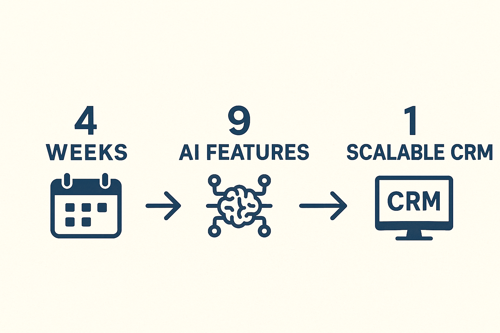

🚀 How I Built a Multi-Tenant AI CRM in 4 Weeks (While Working a Day Job)

Most teams need a year and a small army to build what I shipped in four weeks.
No funding. No team. Just focus, architecture, and AI that pulls its weight.
This wasn't a startup sprint with investors or interns — it was me, working construction by day and building a production-ready multi-tenant CRM by night. My question was simple:
Could one person, armed with AI, ship enterprise-grade software in a month?
Spoiler: yes.
Week 1 — Foundation & "Smart Theft"
The first rule of speed: don't rebuild solved problems.
- Firebase handled authentication and data.
- Next.js 14 gave me server components and SSR.
- TypeScript kept it sane.
By Day 2 I had tenant isolation locked down — every record tagged with tenantId, enforced by Firestore rules.
By Day 4: a five-tier role system with clean permission helpers.
By the end of Week 1: core CRM entities — Clients, Deals, Activities, Tasks, Tickets — all humming.
AI wrote about 80% of the code. I reviewed, refactored, and shipped.
That's not cheating — that's leverage.
Week 2 — Teaching the CRM to Think
Most CRMs collect data. Ours interprets it.
- AI Forecast Copilot: flags at-risk deals based on velocity and engagement.
- Deal Narrative Engine: reads activities, maps sentiment, and builds executive dossiers.
- Execution Tracker: measures which AI-recommended actions actually drive results.
The cycle: Predict → Act → Learn → Predict Better.
It stopped being a database and became a decision-maker.

Week 3 — Real-World Ready
By Week 3, it wasn't a prototype — it was a platform.
- Self-Service Signup: onboard in two minutes.
- Payment Integration: trials, billing, and subscriptions handled automatically.
- Custom Domains: every tenant gets their own branded workspace (crm.theirbusiness.com).
No manual provisioning. No waiting. It scaled cleanly — the way modern SaaS should.
Week 4 — Polish, Personality, and the "Gideon" Voice
Now it needed soul.
I built Gideon, an AI persona that's strategic, empathetic, and direct — a virtual sales coach baked into every workflow.
Then came:
- Client Health Scoring for churn prediction.
- Smart Task Prioritization and Revenue Intelligence to spotlight what matters.
- Briefing Engine for live semantic search across client content.
Finally, polish: accessibility, responsive design, real-time validation — all the details that make a build feel finished.
🧠 The Architecture That Made It Possible
- AI Model Router: switches between OpenAI and Anthropic for cost-smart performance.
- Context Builders: aggregate and cache relevant deal data for every AI call.
- Firebase Multi-Tenancy: secure tenant isolation with Firestore rules.
- Execution Tracker: logs every AI action and its impact for continuous feedback loops.

What It Actually Took
Roughly 160 hours of focused build time.
No meetings. No handoffs. No dependencies.
AI didn't replace me — it multiplied me.
The edge came from:
- Instant code generation + refactor suggestions
- Zero context switching
- Ruthless prioritization of core functionality
Lessons Learned
1️⃣ AI is a force multiplier, not a replacement.
It automates repetition — you provide direction.
2️⃣ Domain knowledge beats syntax.
I knew how sales teams break; AI helped me build the fix.
3️⃣ Scope defines success.
We built what mattered now — saved the rest for later.
4️⃣ Architecture enables AI.
Context builders and feedback loops make smarter, cheaper systems.
5️⃣ Solo doesn't mean slow.
One focused builder with AI can out-ship a 10-person team without it.
Results
- ✅ Complete multi-tenant architecture
- ✅ Full CRM stack (Clients, Deals, Activities, Tasks, Tickets)
- ✅ Five-tier role system
- ✅ Nine working AI features
- ✅ Self-service onboarding and white-label domains
- ✅ Deployed on Vercel — production ready
A partner demo compared it to an $80K/year Salesforce setup — and admitted ours felt smarter.

The Unfair Advantage
Modern builders need three overlapping skills:
Domain expertise + technical ability + AI leverage.
Having all three is the new superpower.
I came from construction and sales. I learned to code. Then I learned to let AI amplify both.
That triangle changes everything.
Final Thoughts
The age of bloated teams and endless funding rounds is over.
This is the age of high-leverage builders.
I didn't wait for permission or a paycheck.
I built it because I could see it — and AI helped me make it real.
If you can see it, you can build it.
No investors required — just architecture, focus, and a co-pilot that never sleeps.
⚙️ Built With
Claude Code • GPT Codex • Next.js 14 • Firebase • TypeScript
160 hours of nights and weekends
✍️ About the Author
Josh Stone is the founder of Gideon Codeworks, where small businesses scale faster with AI-powered software and smart automation.
Follow the build journey on LinkedIn or explore more at GideonCode.com.
👋 Want to See It in Action?
See how AI-leveraged development can transform your business.
Book a Demo →